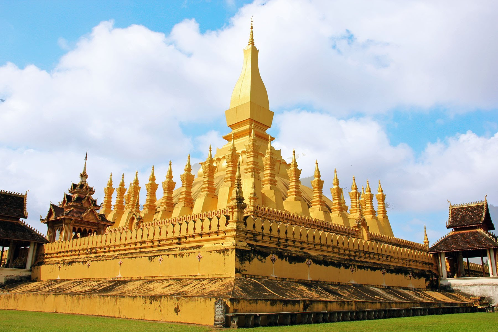
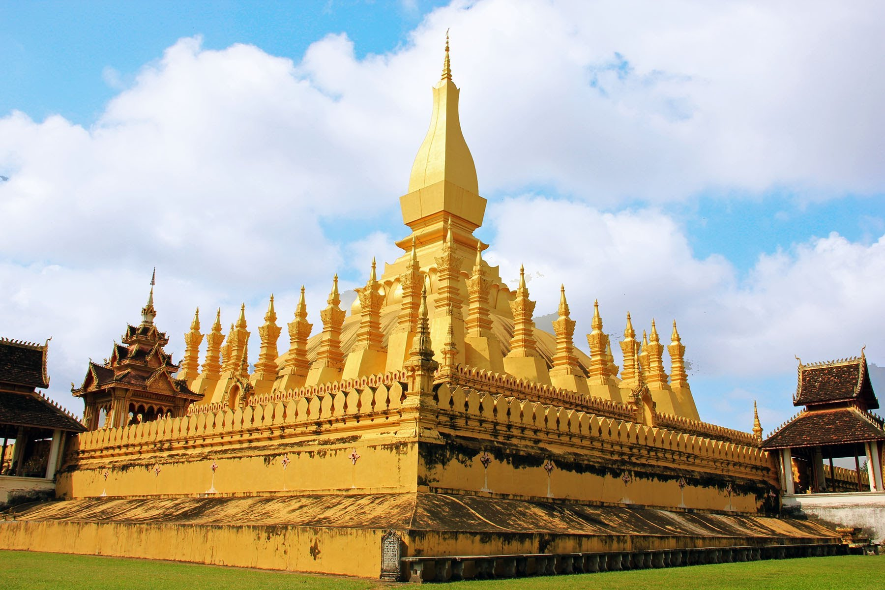
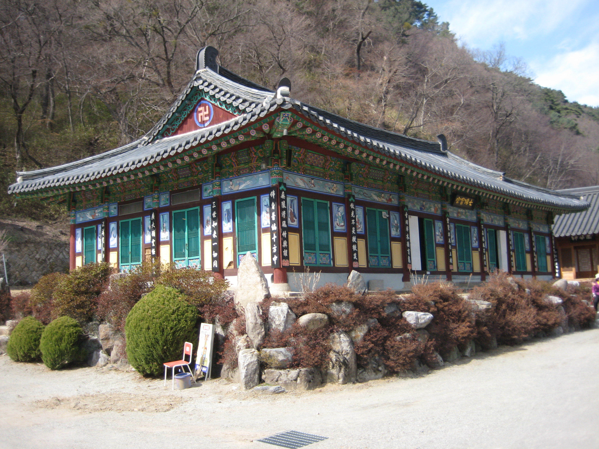
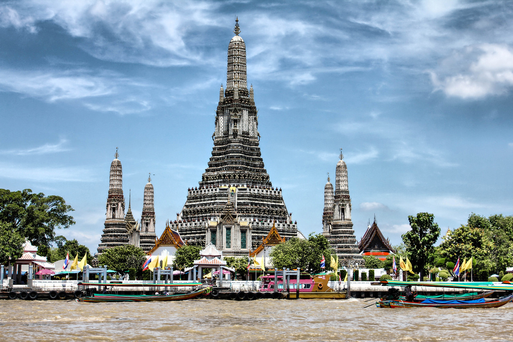
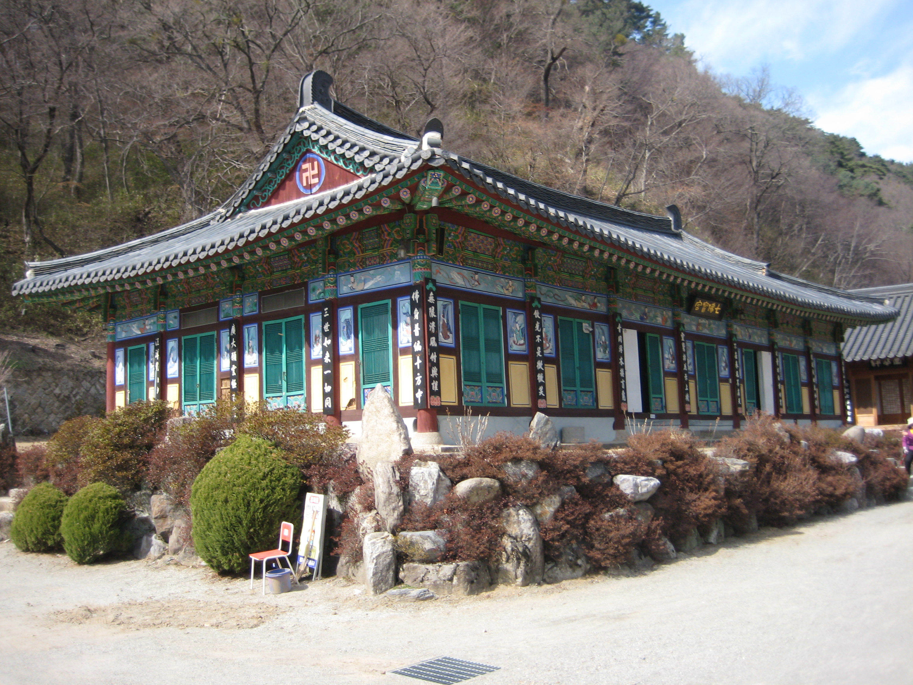
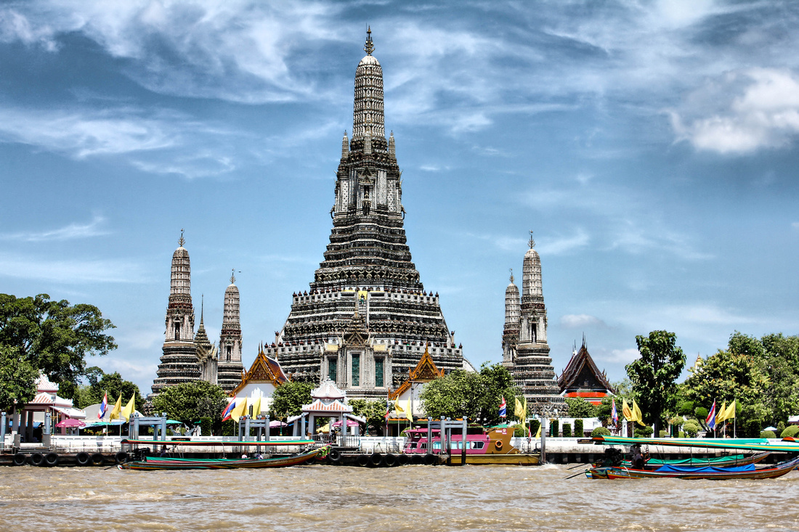

Buddhism is a religion based on the teachings of Siddhartha Gautama, or the 'Buddha'. Buddha attained enlightenment and assumed the title Lord Buddha. It teaches numerous beliefs, and practices regarding self-realization and attuning to the will of the universe. Buddhism is practiced by approximately 300 million people today. Buddhism is practiced mostly in China, Thailand, Vietnam, Myanmar, Sri Lanka, South Korea, Taiwan, Cambodia, Japan and India.
- Buddhism is founded in northeastern India.
- Prince Siddharta Gautama abandoned his family's wealthy lifestyle in search of the true way to end suffering. In his quest, he found that the Middle Way was the path to awareness, enlightenment, and peace.
- Meditation is a key practice in Buddhism to understand the mind in order to achieve enlightenment.
- Chanting is a common practice in Buddhist communities.
- Originating in India, where writing was rare, chanting enabled important texts to be passed from person to person.
- The ritual of chanting was eventually found to be a useful way to focus the mind, and remember and internalize key Buddhist ideas.
- Three types of structures are associated with the religious architecture of early Buddhism: monasteries (viharas), places to venerate relics (stupas), and shrines or prayer halls.
- The goal of Buddhism is to reach Nirvana, which means cessation of passion, aggression and ignorance.
- The basic doctrines of early Buddhism is the “four noble truths”.
- Buddhism is divided into two main schools, the Theravada and the Mahayana. The Vajrayana is another school predominant in Tibet and Japan.
BUDDHISM ARCHITECTURE

 

 



❮
❯
Caption Text
BUDDHISM FAQ
Stuff to know.
Bowing is common practice in Asia as a form of greeting and expressing respect.
Buddhists bows when entering or leaving a temple, shrine, pilgrimage place, or spiritual circle of any kind. Modesty and respect for others is communicated through bowing in many Asian Buddhist cultures.
Bowing is sometimes difficult for Westerners to appreciate because it’s equated with submission in Western culture.
The Buddha was born as Siddhartha Gautama into a royal family in Nepal in 563 BC.
He did not claim to be a God; he was a human being who became Enlightened and spend his entire life teaching the principles of Buddhism.
The Four Noble Truths are the central teachings of Buddhism. They are the truth of suffering, the truth of the cause of suffering,
the truth of the end of suffering, and the truth of the path that leads to the end of suffering. The Four Noble Truths are meant to help with the suffering humanity faces, whether it is physical or mental.
Enlightenment is a transformative experience through which one achieves a state of knowledge and wisdom and can understand the Truth, also known as Dharma.
It is being able to comprehend the way things appear to us and the true nature of those appearances. Enlightenment allows one to understand that what we see around us isn't permanent and see things as they really are.
Theravada and the Mahayana are the two major schools of Buddhism. They are both committed to the the Noble Fourfold Truth and the Noble Eightfold Path.
Theravada is found today in Sri Lanka and Southeast Asia. The Mahayana initially developed in India but then spread to Central Asia, Tibet, and China. It gained tremendous influence in East Asia as it spread to Korea, Japan, and Vietnam.
They disagree on who Buddha was, the essential teachings of Buddhism, what path one should follow and what to have faith in.
No, not all Buddhists are vegetarian. The Buddha himself was not vegetarian nor did he advise his disciples to avoid consuming meat. Theravada Buddhists do not believe in killing animals
themselves but allow the individual to choose if they want to be vegetarian. Vajrayana Buddhism encourage vegetarianism but does not consider it mandatory. Mahayana Buddhists are commonly vegetarian.
In most Buddhist traditions it is common for monks and nuns to shave their head. There is a rule saying Theravada Buddhists, also known as bhikkhu, cannot grow their hair beyond a certain length, so they
usually shave their head once a month or sometimes more frequently. Siddhartha Gautama shaved his head before leaving his palace and becoming the Buddha. Therefore many monks perceive the act of shaving their head
as embodying their principal spiritual teacher.
The robes creates uniformity and reminds the person wearing that they are part of a larger community. It is also a reminder that they have agreed to master the Dharma and have committed to high spiritual ideals.
The first monks and nuns were taught to make their clothes of “pure” cloth, which meant unwanted cloth, so the cloth was often filthy. Today, priests and nuns create robes from cloth that is donated or purchased.
The robe consists of 3 layers, a waistcloth (antaravasaka), an upper robe (uttarasanga) and outer robe (sanghati).
Buddha said “Properly considering the lodging, I use it: simply to ward off cold, to ward off heat, to ward off the touch of flies, mosquitoes, wind, sun and reptiles; simply for protection from the inclemencies
of weather and for the enjoyment of seclusion.” During the time of the Buddha, India was covered in forests. He mentioned the “'foot of a tree” as the basic shelter for bhikkhus. Eventually monasteries were built and many adapted to a more settled lifestyle. Today many monks live in village monasteries.
MORE RESOURCES
- General Info: http://www.commisceo-global.com/blog/a-brief-introduction-to-buddhism
- General Info: https://www.khanacademy.org/partner-content/asian-art-museum/aam-buddhism-topic/buddhism/a/introduction-to-buddhism
- General Info: http://aumamen.com/topic/buddhism-interesting-facts
- More FAQs: https://buddhismnow.com/faq/
- More FAQs: http://www.buddhanet.net/e-learning/buddhistworld/faqmonks.htm
- Buddhist Architecture: https://www.sscnet.ucla.edu/southasia/Culture/Archit/BudhArch.html
- Buddhist Art Around the World: http://www.newworldencyclopedia.org/entry/Buddhist_Art
- Buddhist Holidays: http://www.religionfacts.com/buddhism/holidays
- Basic Beliefs: http://www.religionfacts.com/buddhism/beliefs